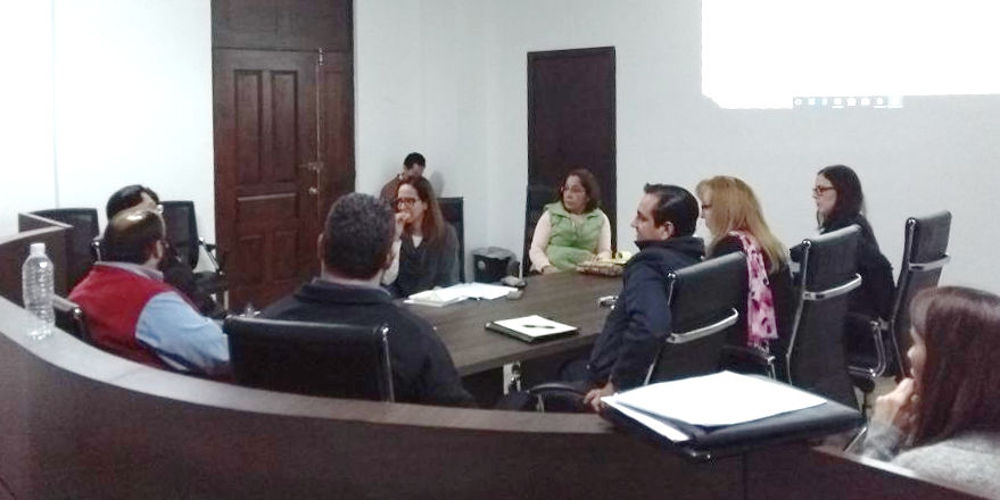
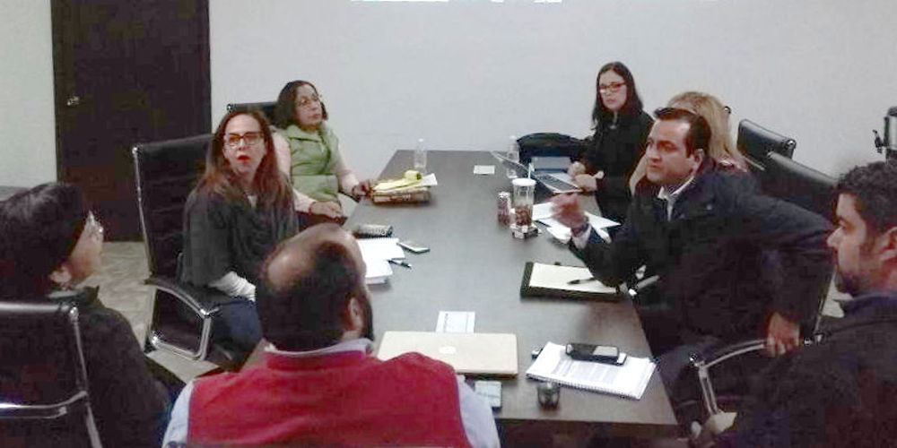
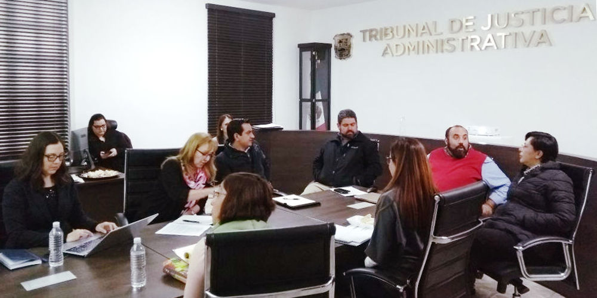

Analiza Comité Coordinador propuesta de lineamientos que regularán actuación del SEA
12 marzo 2018
Comunicado de Prensa.
Sistema Anticorrupción del Estado de Coahuila. Consejo de Participación Ciudadana.
Saltillo, Coahuila.- Integrantes del Comité Coordinador del Sistema Estatal Anticorrupción de Coahuila se reunieron el lunes 12 de marzo de 2018, para analizar la propuesta de lineamientos para la coordinación y funcionamiento del Comité Coordinador del Sistema Estatal Anticorrupción, así como el cronograma de actividades que desarrollará el propio Comité Coordinador.
En la sesión de trabajo que se desarrolló en Sala del Pleno del Tribunal de Justicia Administrativa en Saltillo, estuvieron la magistrada presidenta del Tribunal de Justicia Administrativa, Sandra Rodríguez Wong; la magistrada presidenta del Consejo de la Judicatura del Poder Judicial en la entidad, Miriam Cárdenas Cantú; la secretaria de Fiscalización y Rendición de Cuentas del Gobierno estatal, Teresa Guajardo Berlanga; así como Jesús Homero Flores Mier, fiscal especial para Delitos por Hechos de Corrupción; Manuel Gil Navarro, presidente del Consejo de Participación Ciudadana; Marcela Castañeda Agüero, titular de la Secretaría Ejecutiva del Sistema Estatal Anticorrupción y representantes de la Auditoría Superior del Estado y del Instituto Coahuilense de Acceso a la Información Pública.
Manuel Gil dirigió los trabajos que incluyeron la presentación de lineamientos que tienen por objeto establecer las bases y principios para la efectiva coordinación entre las y los integrantes del Comité Coordinador del Sistema Estatal Anticorrupción, sus reglas de funcionamiento y organización.
Entre los temas que se abordaron en esta reunión de trabajo y previa a la sesión del pleno del Comité Coordinador, se mencionó que para el cumplimiento de las disposiciones a las que hace referencia la citada reglamentación interna, los integrantes del Comité Coordinador se apoyarán técnicamente de la Secretaría Ejecutiva del Sistema Estatal Anticorrupción.
Igualmente se analizaron los alcances del cronograma de acciones que incluye fechas para el cumplimiento de objetivos de capacitación, elaboración de una propuesta de política integral en materia de prevención, control y disuasión de faltas administrativas y hechos de corrupción, así como la armonización de mecanismos para la recopilación, sistematización, procesamiento, intercambio y actualización de información, entre otros puntos.
Cabe señalar que igualmente estuvieron presentes integrantes del Consejo de Participación Ciudadana, de la Secretaría Ejecutiva del Sistema Estatal Anticorrupción, así como de la Auditoría Superior y de la Fiscalía Especial para Delitos por Hechos de Corrupción.


